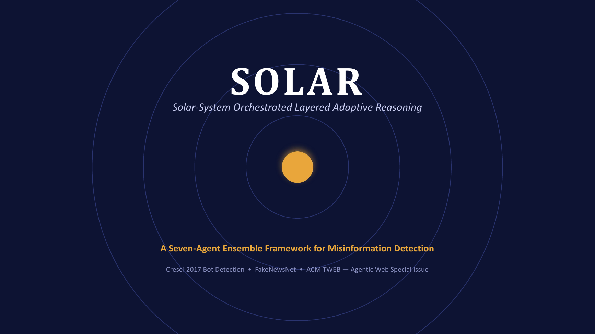
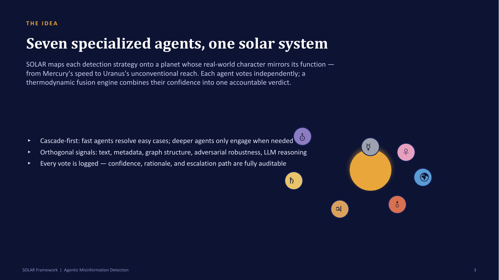
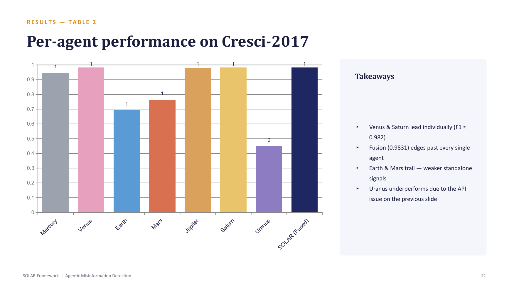
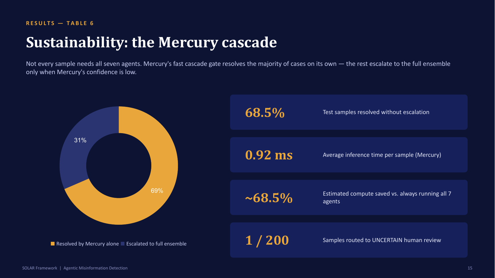

I Built a Seven-Agent Misinformation Detector Named After the Planets. Then I Audited It, and It Failed.
It began as a speech to 10th graders. It ended as a lesson in how a good score can hide a broken experiment.

I first imagined SOLAR in a speech to a class of 10th-grade students. I used the solar system as a metaphor for building things well: Mercury is fast, Venus is trustworthy, Earth is grounded in facts, Mars is tough, Jupiter is strong, Saturn has extra layers, and Uranus is the odd one that sees what others miss.
Then I realized each planet could be a real component of a misinformation detector.

The system
Seven agents each look at a post from a different angle and vote:
| Agent | Job | How |
|---|---|---|
| Mercury | Fast first pass | Word-frequency model |
| Venus | Who is speaking? | Account credibility and follower graph |
| Earth | Are the facts real? | Wikidata lookups |
| Mars | Does it survive tampering? | Perturbs the text and checks consistency |
| Jupiter | Strongest model | BERT plus two tree models |
| Saturn | Account behavior and style | 50 features in five "rings" |
| Uranus | What is new? | Gemini LLM, zero-shot |
A fusion engine, borrowing the free-energy idea from physics, weights each vote by the agent's reliability and its confidence. A case the agents cannot settle is sent to a human. Every vote is logged so a decision can be audited.
Mercury was meant to be the efficient one: it was confident on 68.5% of test cases, so I told myself the heavy agents could be skipped for those.

The headline
On the Cresci-2017 Twitter bot benchmark, the fused system scored F1 0.9831 and AUC 0.9987, ahead of the best classical baseline (SVM, 0.9648). By any normal standard, it was done.

Then I audited my own work
I wrote a list of everything that bothered me, and it was long.
- Uranus had been broken the whole time. Its score was an F1 of 0.449, an AUC of exactly 0.50. A library I used had been retired mid-project, and my free API quota ran out, so its calls quietly fell back to a default answer. It had not failed; it had never really run. All 200 of its test responses were fallbacks.
- Half the ablation said the system did not need its parts. Removing Mercury, Mars or Uranus changed fusion F1 by exactly zero, and removing one more agent slightly improved it. Only three agents carried the signal, and the best single agent alone scored 0.9826 against the fused 0.9831. "All seven agents contribute" was not something I could say with a straight face.
- The compute saving was never measured. The 68.5% was how often Mercury was confident. The fusion step still ran every agent, and I recorded no timings.
- A suspicious number. When I trained every baseline on one dataset and tested on another, all seven scored an identical F1 of 0.3359, to four decimals. Seven different models do not do that. It means something is broken in my evaluation, not that models are brittle, and I stopped treating it as a finding.
- A second dataset that behaved oddly. On 422 news articles, Mercury scored an AUC of 0.419, worse than a coin flip.
- The benchmark was not the benchmark. My Cresci-2017 sample had 4,465 accounts at 22% bots. The full benchmark has 14,368 accounts at 75.8% bots, so my numbers were not comparable to anyone else's.
- A bug I had already fixed once. An early Venus run scored 0.0% accuracy because my train-test split put no genuine accounts in the test set. That is the kind of mistake that makes a result look either terrible or perfect.
None of this meant the system was useless. It meant my first draft claims were bigger than my evidence. The audit log is genuinely useful, but "seven necessary agents" was a story I liked more than a result I had earned.
What I did next
The audit changed my question. It stopped being "how good is my detector?" and became "can you trust any detector on your own data, and how would you find out cheaply?"
1. Detectors do not transfer. I trained bot detectors on six datasets and tested them on the seventh. On six of the seven, the AUC fell by 0.11 to 0.27. At a 5% false-flag rate, a detector caught as few as 3.5% of the bots on data it had never seen. Part of the problem is the word "bot": the same feature, like how much an account tweets, points in opposite directions in different datasets.
2. You cannot fix it by counting. I tried five standard methods for estimating the share of bots in a new group from a detector. Plain counting under-estimated by about 29 points, the corrected versions jumped to 0% or 100%, and nothing beat the lazy answer of always guessing the average (17.9 points of error). Stable features and simpler models did not rescue it.
3. A small random human sample does. Labeling about 200 randomly chosen accounts gave a 95% interval about 5.4 points either side, a typical error of 2.7 points against 28.9 for counting what the detector flagged, and the intervals covered the truth 93 to 96% of the time, as promised. Sample size drove accuracy, not detector quality.
4. Not everything worked. A small language model as a labeler was at chance on political claims and good on COVID news, and did not clear the bar I had set in advance (5.9% narrower intervals against a 15% target). A short pilot that picks which scorer to trust was about 6% narrower and never worse than random sampling, but I designed it after seeing the same datasets, so that gain is in-sample.
5. The same idea audits LLM judges. On 1,612 MT-Bench comparisons, GPT-4 disagreed with the human majority 28.7% of the time (22.7% on humanities, 37.3% on coding), a rate you can pin down to about 6 points with only 200 human labels. A second, weaker model as an error flag failed (AUC 0.552 against a bar of 0.65), which the maths predicts: when a weaker judge disagrees with a stronger one, the weaker one is usually the wrong one.
6. Monitoring. If you check an ordinary interval after every label, it misses the truth in 42 to 46% of streams. A betting-based confidence sequence missed in only 2 to 3%, at about 1.5 times the width. I turned the methods into two browser tools, one to check a detector with a small labeled sample and one to monitor a judge over time.
Two limits matter. In every simulation, the dataset's own label played the human reviewer, which is the best case, because real reviewers make mistakes. And the monitoring results use bootstrap streams with constructed shifts, not real drift over time. I fixed the success bar before every run, and I am reporting the ones that failed.
What I would tell you
- When every number looks great, audit the experiment before you celebrate.
- An identical score across different models is a bug alert.
- A component that has never really run cannot be credited, or blamed.
- Use a metaphor to explain a design, but let evidence justify it.
- A few hundred random human labels beat every automatic estimate I tried.